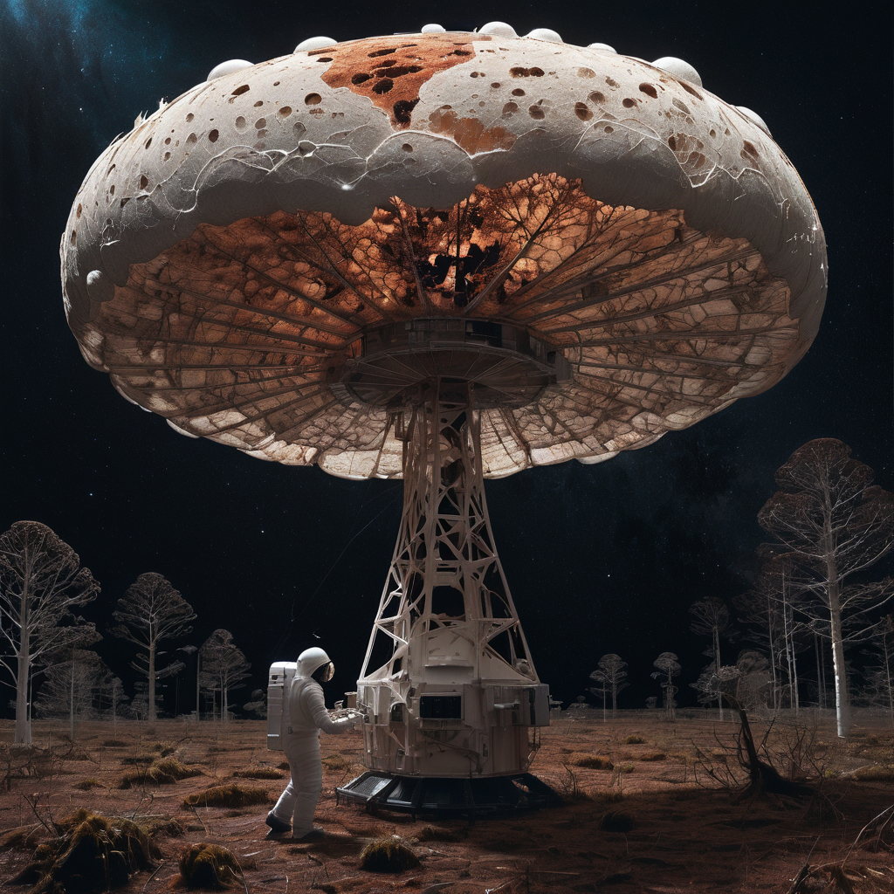

Gombából műhold
Ahogy fejlődik az űrtechnológiánk, úgy gyülemlik a Föld körül keringő szemét. A már használaton kívüli rakéták, műholdak, egyéb űreszközök és azok törmelékei nagy számban vannak jelen bolygónk körül, és egyre nagyobb fenyegetést jelentenek a még működő űreszközökre. Rengeteg szakértő dolgozik azon, hogy megoldást találjanak a problémára. Közéjük tartozik Max Justice kiberbiztonsági szakember is, aki hosszú időn át tevékenykedett az űriparban.
Justice célja most az, hogy micélium szálakból hozzon létre műholdakat. A fehérjében gazdag anyagot gombákból vonják ki, az utóbbi időkben pedig több kutató is kísérletezni kezdett azzal, hogy a környezetbarát, olcsó, erős és nem szennyező alapanyagból különböző tárgyakat hozzanak létre. Kialakítottak már gomba alapú csomagolóanyagot, műbőrt, koporsót, sőt még szörfdeszkát is.
Justice szerint a micélium előnye, hogy típustól függően erősebb, jobban ellenáll a tűznek és a hidegnek, könnyebb, rugalmasabb, illetve fenntarthatóbb. A szakértő hozzátette, egy micéliumból készült űreszköz széteséséhez nagyon nagy energiára lenne szükség az űrben, ami valójában előny, hiszen csökkentené a veszélyes törmelékek kialakulását.
Ehető gombák
Csiperke
A csiperke (Agaricus bisporus) az egyik legkedveltebb gomba, mely a legkönnyebben beszerezhető fajta. A csiperkét termesztik, ezért egész évben kapható. A csiperkéből két fajtával lehet találkozni, fehérrel és barnával. A gomba remekül ízesíthető, kalapja és tönkje is fogyasztható. Csiperkéből rengetegféle finomságot dobhatsz össze.
Készülhet belőle villásreggelire tojással omlett, előétel gyanánt bruschetta, leves vagy krémleves, főfogásként talán a legismertebb paprikásan elkészítve, de a vörösborosan vagy tejszínnel főtt gombás ragu is nagyon finom, sőt a töltött, grillezett vagy épp rántott gombafejekről sem érdemes megfeledkezni.
Laskagomba
A laskagomba (Pleurotus ostreatus) nagyon izgalmas ízű, könnyen emészthető. A laska vitaminokban, ásványi anyagokban és nyomelemekben bővelkedik. Ezt a fajtát is egész évben termesztik, könnyen beszerezhető, de a természetet járva is találkozhatsz vele élő vagy elhalt lombos fákon.
5 laskagomba recept:
Laskagomba krémleves rétessel
Vörösboros laskagomba, paprikás nokedlivel
Borókás-mustáros laskagomba
Laskagombás fusilli
Laskagombás tarja
Ízletes vargánya
A ízletes vargánya (Boletus edulis) az egyik legízletesebb gombafajta. A vargányából többféle is kapható. Íze mellett fehérje-, ásványianyag- és vitamintartalma miatt is érdemes fogyasztani.
Ez a gomba nagyon ízletes és sokféleképpen elkészíthető: nyersen salátákba, gombalevesnek, vajban párolva – köretnek, rántva és pörköltnek, de szárítás és őrlést követően, fűszerként is nagyon sok ételhez használják.
Egészségre gyakorolt pozitív hatásait (gyulladás-csökkentő, antibakteriális, vírusellenes hatás) a tudomány is bizonyította.
Mérgező gombák
Légyölő galóca
A légyölő galóca (Amanita muscaria) hegyvidéki területeken fordul elő, Erdély olykor tömegesen terem. Hazánkban Vas és Zala megyében gyakori.
Kalapja piros vagy narancsszínű, rajta fehér, pehelyszerű foltok. Jellegzetes és látványos külseje miatt az egyik legismertebb gombafaj, a mérges gombák képviselője.
Leggyakrabban részegségre emlékeztető állapot, szédülés, émelygés, hasi panaszok, hallucinációk, álmosság és mélyalvás. A felnőttek általában túlélik a mérgezést, gyerekekre és idősekre azonban komoly veszélyt jelenthet!
Mérges pókhálósgomba
A mérges pókhálósgomba (Cortinarius orellanus) meleg tölgyerdőkben termő, halálosan mérgező gombafaj.
Kalapjának átmérője 3–8 cm, alakja domború vagy lapos, közepe gyakran tompán púpos. Színe narancsos-rókaszínű, narancsbarnás vagy sötét vörösbarna. Szélén megtalálható a fátyol pókhálószerű maradéka. Enyhén retekszagú.
Mérgező, akár halált is okozhat. Orellanint tartalmaz, amely a májat és a vesét károsítja és többszöri fogyasztás esetén gyorsan felhalmozódik a szervezetben. A súlyosabb mérgezés 2-3 napos lappangási idő után nyilvánul meg.
A gombamérgezés megelőzése
A szedett gombát át kell vizsgáltatni gombaszakértővel!
Ismeretlentől soha ne vegyünk/fogadjunk el gombát!
A piacon csak megfelelő engedéllyel rendelkező árustól vásároljunk!
Csak a friss, egészséges gomba fogyasztható biztonsággal.
Nyersen ne fogyasszunk gombát!
A kész gombaétel hűtőszekrényben, csak néhány napig tárolható!
Kisgyermekek és érzékeny gyomrúak ne fogyasszanak gombát tartalmazó ételt!
Mérgezés gyanúja esetén, azonnal forduljunk orvoshoz!